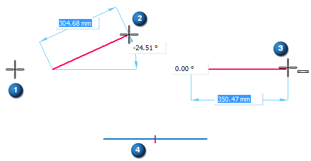

Example: Draw a horizontal line
You can use IntelliSketch to draw a horizontal line. You can apply a horizontal relationship as you draw the line, or draw the line without a horizontal relationship.

-
Choose the IntelliSketch command
 on the Home tab or the Sketching tab.
on the Home tab or the Sketching tab. -
In the IntelliSketch dialog box, on the Relationships tab, set the Horizontal or Vertical option, and then click OK.
-
Choose the Line command.
-
Click where you want to place the first end point of the line, anywhere in the application window (1).
-
Move the cursor around in the window (2). Notice that the dynamic line display always extends from the end point you just placed to the current cursor position. You may also see IntelliSketch relationship indicators displayed at the cursor.
-
Move the cursor to make the dynamic line approximately horizontal.
-
When the IntelliSketch Horizontal relationship indicator is displayed at the cursor (3), click to place the second end point.
IntelliSketch places a horizontal relationship handle on the new line (4).
-
Midpoint of a line or arc – Press M.
-
Intersection point of lines, circle, curves, and arcs – Press I.
-
Center point of a circle or arc – Press C.
-
Endpoint of a line, arc, or curve – Press E.
Relationship handles can be displayed or hidden with the Relationship Handles command.
To snap to an intersection point or a keypoint, locate the element(s) with the cursor and then press one of these shortcut keys.
For intersection points—If there are multiple eligible points located, QuickPick opens and lists them. In QuickPick, click to select the point you want.
How do I
Draw with IntelliSketchExample: Draw a line
Example: Draw a line connected to another line
Example: Draw an arc
Example: Establish More Than One Relationship
Example: Case Where a Relationship Is Not Maintained
Suspend or remove geometric relationships
Look up more details
IntelliSketch commandAlignment Indicator command
Locate Background command